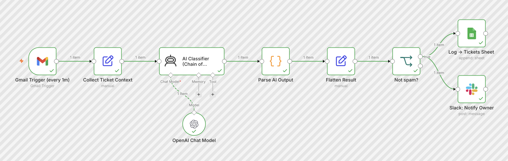
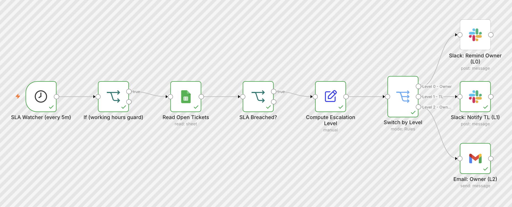
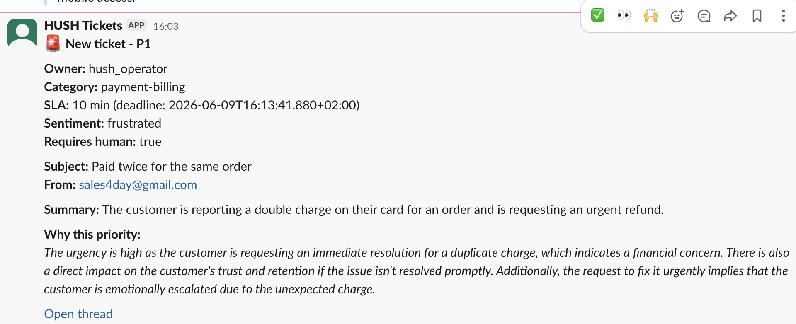
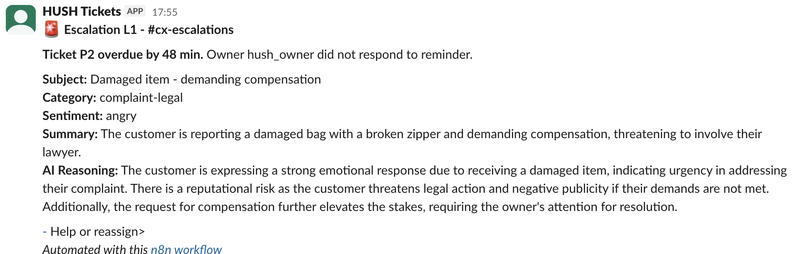
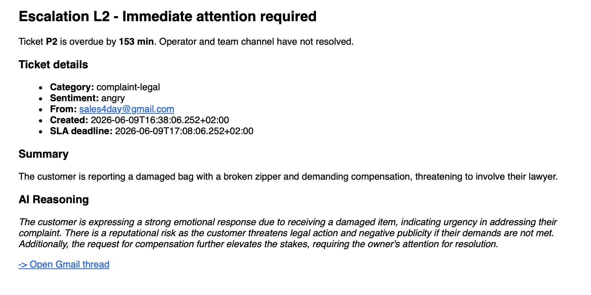
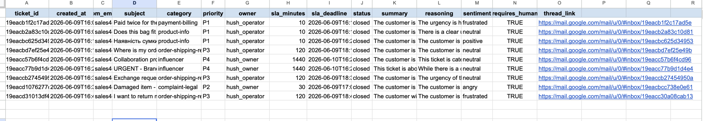
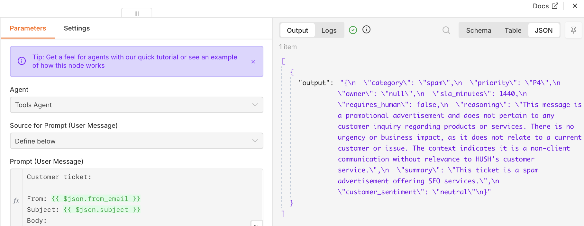

Context
Company: HUSH - B2C premium bag e-commerce
Industry: Online Retail (Fashion Accessories)
Target clients: End consumers purchasing premium bags online
Support volume: 50-80 tickets/day (up to 120+ during sales and ad campaigns)
Team: 3 operators, flexible scheduling, 09:00-22:00 shift, 1-2 on duty daily
Core problem: Tickets sorted manually, urgent requests lost in queue, zero SLA visibility, no escalation mechanism
Problem
| Metric | Value | Issue |
|---|---|---|
| Ticket triage | 100% manual | No consistent prioritization |
| P1 identification | Inconsistent | Depended on which operator saw it first |
| SLA visibility | None | No one knew how long clients were waiting |
| Escalation on breach | Never | Missed tickets stayed missed |
| Operator triage time | 60-90 min/day | Reading and sorting every message manually |
| Shift handover | Error-prone | Duplicate responses and missed tickets |
Operators were manually reading every message and deciding priority on the fly - from “does this bag fit a laptop?” to legal threats - with no system to separate urgent from routine. P1 tickets (payment failures, active purchase decisions) were sitting in the same queue as influencer gifting requests.
Solution
Built a 2-track AI ticket routing system that classifies, logs, notifies, and escalates automatically:
Gmail (unread) >> Collect Context >> AI Classifier (Chain of Thought)
↓
Parse AI Output
↓
Flatten Result
(working hours SLA)
↓
Not spam?
↓
┌───────────────────────────────┐
Google Sheets Log Slack: Notify Owner
(15 fields) (#cx-tickets)
─── SLA WATCHER (every 5 min) ──────────────────────────────────────
Cron >> Working Hours Guard (09:00-22:00)
↓
Read Open Tickets (Sheets)
↓
SLA Breached? (deadline < now)
↓
Compute Escalation Level (minutes_overdue)
↓
Switch by Level
↓
┌───────────────┬───────────────┬───────────────┐
L0 (0-30 min) L1 (30-60 min) L2 (60+ min)
Slack DM owner #cx-escalations Email to ownerTrack 1 - Ticket Ingestion and Classification
Processes every incoming email automatically. AI classifies category, priority, owner, and SLA deadline using Chain of Thought reasoning. Logs to Google Sheets and notifies the right owner in Slack within seconds.
Track 2 - SLA Watcher
Runs every 5 minutes during working hours. Checks all open tickets for SLA breach. Fires a 3-level escalation chain based on how long the ticket has been overdue.
Process
1. Prompt Design
- Full system prompt written for HUSH with 5 mandatory blocks: role, context, instructions, Chain of Thought, output format
- 5 ticket categories specific to premium bag e-commerce
- Priority matrix P1-P4 with SLA minutes (10 / 30 / 120 / 1440)
- OVERRIDE rules: legal keywords >> always P2; influencer + “urgent” >> always P4; explicit human request >> requires_human: true
- Language auto-detection: AI responds in client’s language
- Temperature 0.2 for consistent JSON output
2. Priority System
| Priority | SLA | Category | Action |
|---|---|---|---|
| P1 | 10 min | product-info, payment-billing | Slack alert to #cx-tickets |
| P2 | 30 min | complaint-legal | Slack alert, routed to owner |
| P3 | 2 hours | order-shipping-returns | Slack alert to #cx-tickets |
| P4 | 24 hours | influencer, other | Slack alert, low urgency |
| Spam | - | spam | Filtered out, not logged |
3. Escalation Rules
| Level | When | To whom | Channel |
|---|---|---|---|
| L0 - reminder | +5 min after SLA breach | On-duty operator | Slack DM |
| L1 - team alert | +30 min after breach | Whole team | #cx-escalations channel |
| L2 - owner escalation | +60 min after breach | Owner | Email + subject line with ticket details |
4. n8n Workflow Architecture
| Workflow | Trigger | Function |
|---|---|---|
| Track 1 - Ticket Routing | Gmail Trigger (every 1 min) | Collect >> Classify >> Log >> Notify |
| Track 2 - SLA Watcher | Schedule Trigger (every 5 min) | Read >> Check >> Escalate |
5. Working Hours Logic
Two implementation points:
SLA deadline calculation (at ticket creation):
Ticket at 22:30 >> deadline starts at 09:00 next day + SLA minutes. Ticket at 07:00 >> starts at 09:00 same day. Ticket at 14:00 >> normal calculation.
SLA Watcher guard:
First node after cron checks $now.hour >= 9 && $now.hour < 22. Outside working hours >> execution stops. No false breach alerts overnight.
6. Key Technical Decisions
| Problem | Cause | Fix |
|---|---|---|
| Flatten Result empty | Agent node returns AI output as plain string | Added Code node: JSON.parse($input.item.json.output) |
| escalation_level always 0 | Field referenced itself before being set | Duplicated the minutes calculation inline |
| DateTime.fromFormat() NaN | Millisecond format mismatch with Sheets ISO string | Switched to native new Date().getTime() |
| Structured Output Parser conflict | Incompatible with Agent node type | Removed parser, replaced with Code node |
Results
| Metric | Before | After | Change |
|---|---|---|---|
| Ticket triage | 100% manual | 100% automated | ↓ 0 min/ticket |
| Operator triage time | 60-90 min/day | ~10 min/day (review only) | ↓ 85% |
| Time to classification | 5-15 min (manual) | ~8 seconds | ↓ 99% |
| P1 identification | Inconsistent | 100% in testing | New |
| SLA visibility | None | Real-time in Sheets | New |
| Escalation on breach | Never | Automatic 3-level | New |
| Misclassifications | N/A | 0 out of 10 test tickets | 0% |
| Multilingual support | Manual decision | Automatic detection | New |
| Special rule accuracy | N/A | 100% (URGENT influencer >> P4 ✅) | New |
Estimated time saved: 60-90 min/day >> ~400 hours/year per operator
Scalability: system handles 50 or 500 tickets/day with zero additional classification effort
Tech Stack
- n8n (self-hosted via Docker) - workflow automation, both tracks
- OpenAI GPT-4o-mini - ticket classification with Chain of Thought reasoning
- Gmail API - ticket ingestion trigger + L2 escalation email
- Google Sheets - ticket log, SLA tracking, status management
- Slack - new ticket notifications + 3-level escalation alerts
- JavaScript / Luxon - working hours SLA deadline calculation
What Works
- Full end-to-end automation: email arrives >> classified >> logged >> notified in Slack
- Working hours SLA - no false escalations outside 09:00-22:00
- 3-level escalation chain fires correctly based on minutes overdue
- Spam filtered before logging - keeps Sheets clean and saves OpenAI budget
- Chain of Thought reasoning visible in every Slack notification - operators understand why priority was assigned
- Multilingual - Ukrainian test ticket classified and summarized correctly
- Special rules hold - influencer “URGENT deadline today” stayed P4
What Can Be Improved
- Manual status update - operator must change
statustoclosedin Sheets manually; a Slack button triggering automatic close would eliminate this - Single channel input - prototype uses Gmail only; Phase 2 adds Instagram Direct, Telegram, Facebook, website form
- No duplicate guard - if same email is processed twice, it creates a duplicate Sheets row; add Gmail label
Ticketed+ filterlabel:Ticketedto prevent - L1/L2 repeat alerts - SLA Watcher fires every 5 min; a breached ticket at L2 will send owner emails every 5 min until closed; add
escalation_sentflag to Sheets to prevent repeat sends
Development Plan
- Add Slack button on escalation message >> operator clicks to mark ticket closed >> n8n webhook updates Sheets
statustoclosed - Add Gmail label
Ticketed+ trigger filter to prevent duplicate processing - Add
escalation_sentcolumn to Sheets >> prevent repeat L2 emails on same ticket - Phase 2 channels: Instagram Direct, Telegram, Facebook, website form >> each gets a webhook trigger feeding the same classifier
- Weekly SLA breach report >> cron every Monday >> reads Sheets >> AI finds patterns by category/hour >> posts to Slack
Loom Screencast
Screenshots
- n8n canvas - Track 1

- n8n canvas - Track 2

- Slack #cx-tickets - P1 new ticket notification

- Slack - L1 escalation message

- Slack - L2 escalation triggered + Email sent

- Google Sheets - rows with all 15 fields

- AI Classifier output - reasoning field example

GitHub Repository
🔗 https://github.com/vitaliiburorichnyi/hush-ticket-routing-sla